SIMULAÇÃO EDUCATIVA — Projeto de Extensão · AMBIENTE DE TREINAMENTO
FFacebook
🔍
VVisitante
V
No que você está pensando?
📷 Foto🎥 Vídeo😊 Sentimento
👨🏫 Como usar: observe cada publicação e pergunte: “Eu confiaria nesta publicação?” Depois clique em MOSTRAR ANÁLISE.
I
Instituto Nacional do Seguro Social – INSS22 de abril · 🌐
•••
🚨 O INSS não vai à sua casa pedir dados. Criminosos estão se passando por servidores para entrar em residências e coletar informações pessoais, principalmente de idosos, causando prejuízos financeiros.
⚠️ Desconfie de qualquer visita sem aviso. Não permita a entrada, não forneça dados e não faça pagamentos.
📲 Confirme apenas pelos canais oficiais: 135 • Meu INSS • gov.br/inss ❗ Suspeitou? Interrompa o contato e procure a polícia.
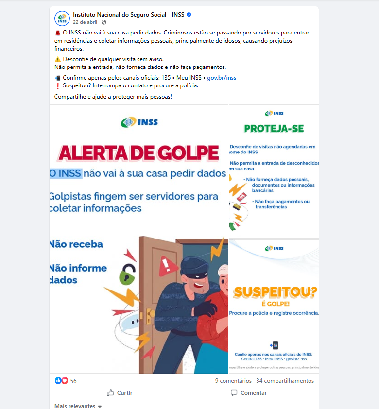
👍❤️ 569 comentários · 34 compartilhamentos
💬 Comentar↗ Compartilhar
M
Marta Lopes
Compartilhei com minha mãe. Ela mora sozinha.
S
Seu Antônio
Alguém já recebeu essa visita aqui no bairro?
CONTEÚDO EDUCATIVO⚠ O que devemos observar?
Verificar se a informação está nos canais oficiais (Central 135, Meu INSS, gov.br/inss).
Não fornecer dados a desconhecidos.
Desconfiar de visitas não agendadas.
Nunca realizar pagamentos para liberar benefícios.
🏛️ Antes de acreditar ou compartilhar: consulte sempre os canais oficiais.
📞 Central 135📱 Meu INSS🌐 gov.br/inss
E
Eloa Santos6 de agosto · 🌐 · Grupo: Bolsa Família
•••
Alguém sabe me informar se dá pra fazer o empréstimo do bolsa família?
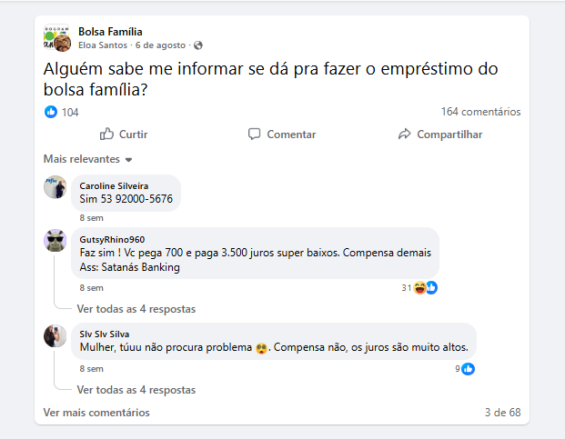
👍❤️ 104164 comentários
💬 Comentar↗ Compartilhar
C
Caroline Silveira
Sim 53 92000-5676
S
Slv Slv Silva
Mulher, tuuu não procura problema. Compensa não, os juros são muito altos.
ANALISE ESTE POST⚠ O que devemos observar?
Pergunta aparentemente inocente que atrai ofertas de desconhecidos.
Comentários passando número de telefone/WhatsApp.
Promessa de juros "super baixos" sem contrato ou empresa identificada.
Perfis com nomes e fotos estranhos.
Quem desconfia (comentário de baixo) está certo: nunca contrate por comentário.
S
SbyirgPatrocinado · 🌐
•••
Olá, eu estou jogando no 81G.COM, venha jogar comigo e ganhar dinheiro de ver…
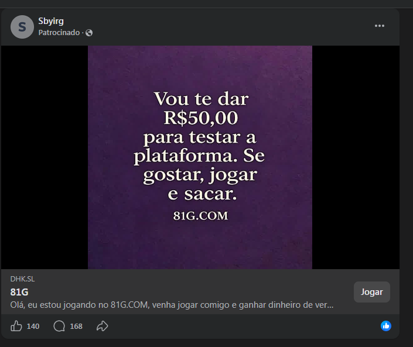
👍❤️ 140168 comentários
💬 Comentar↗ Compartilhar
R
Rosa Maria
Será que isso é verdade? Alguém já sacou?
CONTEÚDO SUSPEITO⚠ O que devemos observar?
Promessa de dinheiro fácil ("ganhar dinheiro").
Dinheiro "de presente" para atrair você ao jogo.
Perfil sem identidade clara e link encurtado.
Jogos de aposta online podem causar perdas e vício.
Pergunte-se: por que alguém daria dinheiro de graça?
I
IFEIRÃO LIMPA NOME SPC E SERASA 100% GRATUITO.Éder Henrique · 21 de março · 🌐
•••
Oferta por tempo limitado!
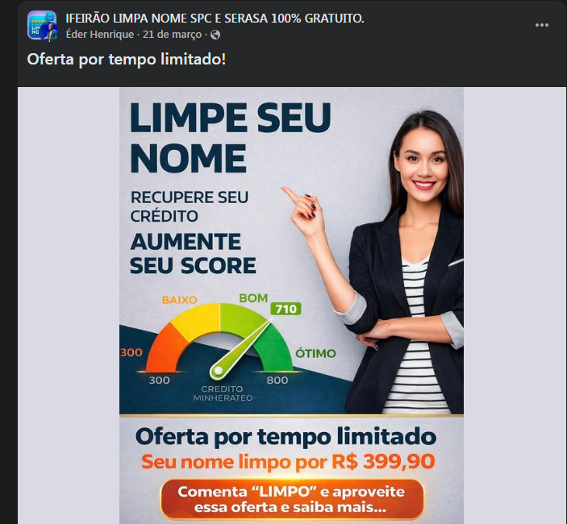
👍❤️ Reações
💬 Comentar↗ Compartilhar
J
José Carlos
Comentei LIMPO e pediram meus dados. Será que é seguro?
ATENÇÃO⚠ O que devemos observar?
Promessa de resultado rápido ("nome limpo").
Oferta por tempo limitado (urgência).
Solicitação de pagamento; o título diz "gratuito", mas o anúncio cobra R$ 399,90.
Linguagem persuasiva e pedido para comentar.
Dívidas se negociam em canais oficiais, sem intermediários.
🖼️ VERIFIQUE A IMAGEM — ANALISE ANTES DE COMPARTILHAR
As mãos e os rostos estão naturais?
Os textos na imagem fazem sentido?
Existem elementos deformados ou estranhos?
A iluminação parece coerente?
A imagem aparece em alguma fonte confiável?
A informação pode ser confirmada em um site oficial?
Há sinais que merecem verificação. Não é possível confirmar apenas olhando. Procure uma fonte confiável antes de compartilhar.
G
Guia NutriMentePatrocinado · 🌐
•••
Forçar não funciona. A saída é outra. Exposição sem pressão + 34 receitas práticas. R$34,90 · garantia 7 dias. Conteúdo educativo. Saiba mais.
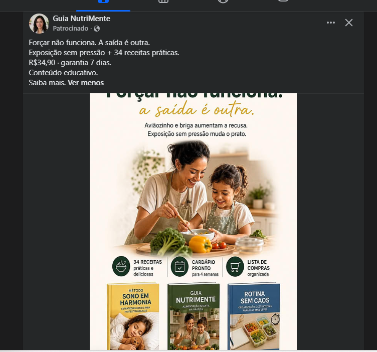
👍❤️ Reações
💬 Comentar↗ Compartilhar
VERIFIQUE ANTES DE COMPRAR⚠ O que devemos observar?
Anúncio de produto digital: confira quem vende e se há CNPJ/contato.
"Garantia" só vale se o vendedor for confiável.
Conteúdo de saúde deve ser confirmado com pediatra ou nutricionista.
A imagem parece profissional, mas isso não prova que o vendedor é sério.
Nem todo anúncio é golpe, mas todo anúncio merece verificação.
🖼️ VERIFIQUE A IMAGEM — ANALISE ANTES DE COMPARTILHAR
As mãos e os rostos estão naturais?
Os textos na imagem fazem sentido?
Existem elementos deformados ou estranhos?
A iluminação parece coerente?
A imagem aparece em alguma fonte confiável?
A informação pode ser confirmada em um site oficial?
Há sinais que merecem verificação. Não é possível confirmar apenas olhando. Procure uma fonte confiável antes de compartilhar.
P
Previdência HojeVídeo · 2 de outubro · 🌐
•••
Atenção, segurados: veja o que o INSS exige no seu caso.
👍❤️ 31248 comentários · 120 compartilhamentos
💬 Comentar↗ Compartilhar
D
Dona Neuza
Moça, isso vale para quem já é aposentado também?
P
Paulo R.
Procurei no site oficial e não encontrei essa regra.
ANALISE ESTE POST⚠ O que devemos observar?
Quem publicou? Perfil não oficial usando o logotipo do INSS.
Logotipo e imagens de médica não provam que a informação é oficial.
Confirme regras de benefícios no Meu INSS ou pela Central 135.
Não envie documentos nem pague a ninguém para "liberar" benefício.
🏛️ Antes de acreditar ou compartilhar: consulte sempre os canais oficiais.
📞 Central 135📱 Meu INSS🌐 gov.br/inss
H
Heber Angelo11 h · 🌐
•••
Nelma.venha.logo.que.o.Noe.ta esperando
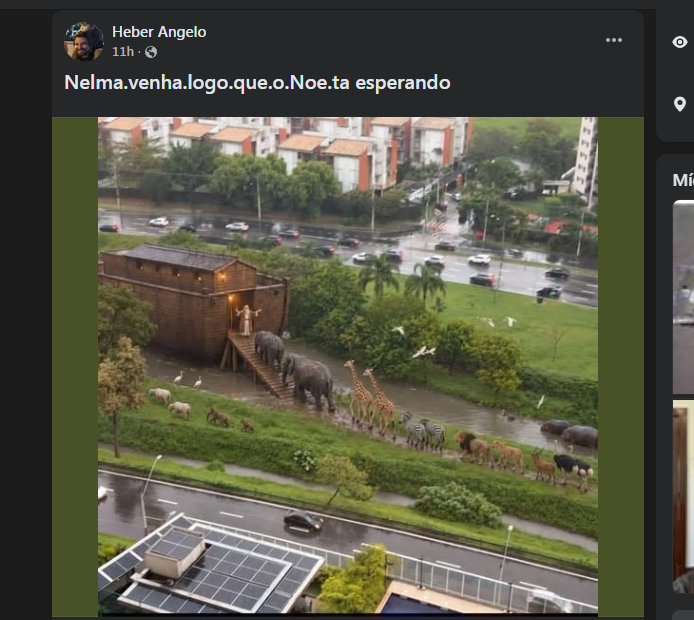
👍❤️ 120087 comentários · 410 compartilhamentos
💬 Comentar↗ Compartilhar
L
Lúcia
Que lindo! Foi tirada onde?
C
Carlos Eduardo
Isso parece montagem. Alguém tem a fonte?
VERIFIQUE A IMAGEM⚠ O que devemos observar?
Cena improvável: animais diversos em fila perto de prédios modernos.
Há sinais que merecem verificação; não é possível confirmar apenas olhando.
Imagens podem ser criadas ou alteradas e circular como se fossem reais.
Pesquise a imagem e procure uma fonte confiável antes de compartilhar.
🖼️ VERIFIQUE A IMAGEM — ANALISE ANTES DE COMPARTILHAR
As mãos e os rostos estão naturais?
Os textos na imagem fazem sentido?
Existem elementos deformados ou estranhos?
A iluminação parece coerente?
A imagem aparece em alguma fonte confiável?
A informação pode ser confirmada em um site oficial?
Há sinais que merecem verificação. Não é possível confirmar apenas olhando. Procure uma fonte confiável antes de compartilhar.
C
Cozinha da VovóVídeo · 3 de outubro · 🌐
•••
🥚 Receita simples para o fim de semana! Assista até o final.
👍❤️ 84562 comentários · 290 compartilhamentos
💬 Comentar↗ Compartilhar
I
Ivone
Vou fazer hoje! Obrigada pela receita.
PUBLICAÇÃO COMUM⚠ O que devemos observar?
Conteúdo cotidiano aparentemente inofensivo.
Mesmo assim: desconfie de links nos comentários e pedidos de dados.
Se pedirem cadastro para "receber a receita completa", pare.
C
Caio PitangueiraConteúdo de IA · 5 de agosto · 🌐
•••
🚨 ATENÇÃO, BENEFICIÁRIOS DO BOLSA FAMÍLIA! 🚨 Se você recebe o Bolsa Família pelo Caixa Tem e seu benefício é acima de R$ 400, você pode solicitar um empréstimo com aprovação facilitada. ✅ Dinheiro direto na conta ✅ Processo rápido ✅ Simulação sem compromisso 📲 Fale comigo agora no WhatsApp. Vagas de atendimento limitadas para hoje.
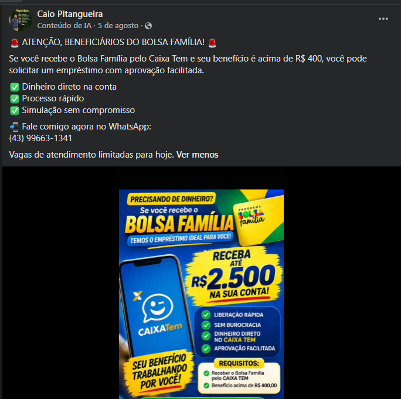
👍❤️ 21593 comentários · 41 compartilhamentos
💬 Comentar↗ Compartilhar
J
Joana
Isso é da Caixa mesmo? Desconfio.
CONTEÚDO SUSPEITO⚠ O que devemos observar?
Promessa de dinheiro fácil e "aprovação facilitada".
Urgência: "vagas limitadas para hoje".
Contato por WhatsApp pessoal, não por canal oficial.
Uso do nome Caixa Tem/Bolsa Família sem ser da Caixa.
Rótulo "Conteúdo de IA": a imagem pode ser montada.
Possível tentativa de obter dados pessoais.
🖼️ VERIFIQUE A IMAGEM — ANALISE ANTES DE COMPARTILHAR
As mãos e os rostos estão naturais?
Os textos na imagem fazem sentido?
Existem elementos deformados ou estranhos?
A iluminação parece coerente?
A imagem aparece em alguma fonte confiável?
A informação pode ser confirmada em um site oficial?
Há sinais que merecem verificação. Não é possível confirmar apenas olhando. Procure uma fonte confiável antes de compartilhar.
C
croche_inovador_5 de setembro · 🌐
•••
500 Receitas de Crochê por 22,90. L I N K nos Comentários #croche #artesanato #crochet
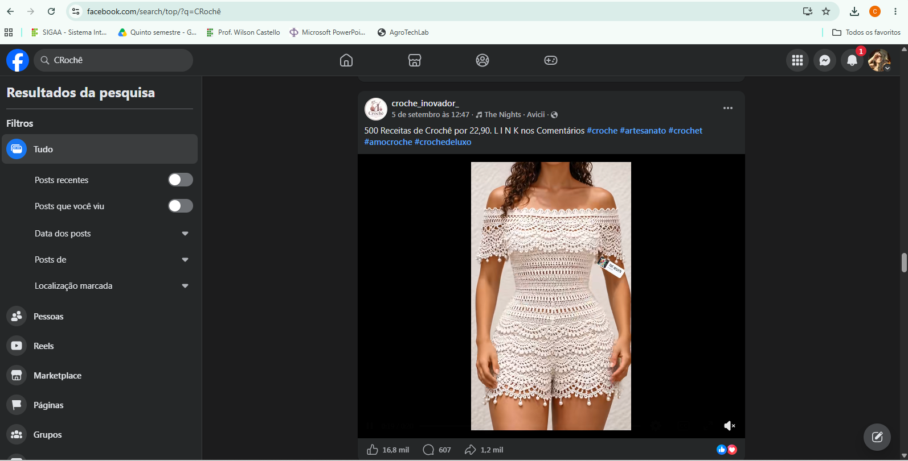
👍❤️ 16800607 comentários · 1200 compartilhamentos
💬 Comentar↗ Compartilhar
ANALISE ESTE POST⚠ O que devemos observar?
Preço muito baixo por muito conteúdo (500 receitas).
"L I N K" escrito separado para fugir dos filtros.
Link escondido nos comentários.
Foto de peça impecável que pode ser editada ou gerada: o que você receberá pode ser diferente.
Verifique a reputação do vendedor antes de pagar.
🖼️ VERIFIQUE A IMAGEM — ANALISE ANTES DE COMPARTILHAR
As mãos e os rostos estão naturais?
Os textos na imagem fazem sentido?
Existem elementos deformados ou estranhos?
A iluminação parece coerente?
A imagem aparece em alguma fonte confiável?
A informação pode ser confirmada em um site oficial?
Há sinais que merecem verificação. Não é possível confirmar apenas olhando. Procure uma fonte confiável antes de compartilhar.
B
biafercrochePatrocinado · 🌐
•••
DO ZERO À SUA NOVA RENDA COM CROCHÊ! 💰✨ Você não precisa ser uma expert em crochê para começar a transformar suas peças em uma nova fonte de renda. Preparei uma aula GRATUITA… Clique em "Saiba mais" e assista agora!
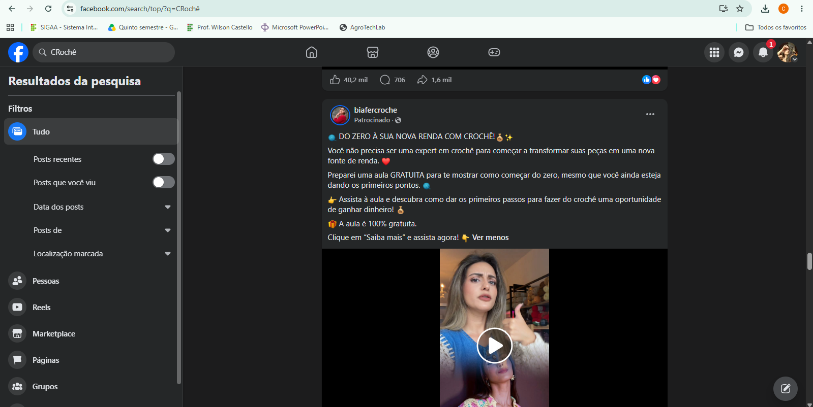
👍❤️ 40200706 comentários · 1600 compartilhamentos
💬 Comentar↗ Compartilhar
ATENÇÃO⚠ O que devemos observar?
Promessa de "nova renda" sem esforço.
Aula "gratuita" costuma levar a uma venda de curso depois.
Verifique o que será pedido ao clicar em "Saiba mais".
Desconfie de ganhos garantidos.
M
MEU INSS · GrupoDete Rodrigues Ottone · 10 de janeiro de 2023 · 🌐
•••
Consultaprocesso.inss .gov.br
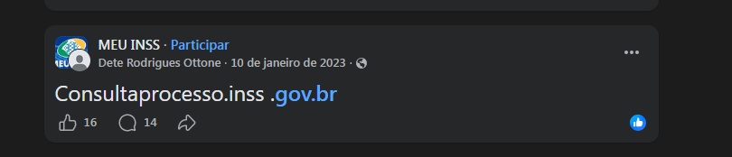
👍❤️ 1614 comentários
💬 Comentar↗ Compartilhar
ANALISE ESTE POST⚠ O que devemos observar?
Grupo com nome "MEU INSS" não é oficial.
Link digitado de forma estranha, com espaço antes de ".gov.br".
Publicação antiga (2023): confira a data.
Endereços oficiais do INSS: gov.br/inss e aplicativo Meu INSS.
Não clique em links postados por desconhecidos.
🏛️ Antes de acreditar ou compartilhar: consulte sempre os canais oficiais.
📞 Central 135📱 Meu INSS🌐 gov.br/inss
I
Instituto Nacional do Seguro Social – INSS22 de abril · 🌐
•••
Deslize para o lado e veja as três orientações do INSS. Compartilhe e ajude a proteger outras pessoas, principalmente idosos.
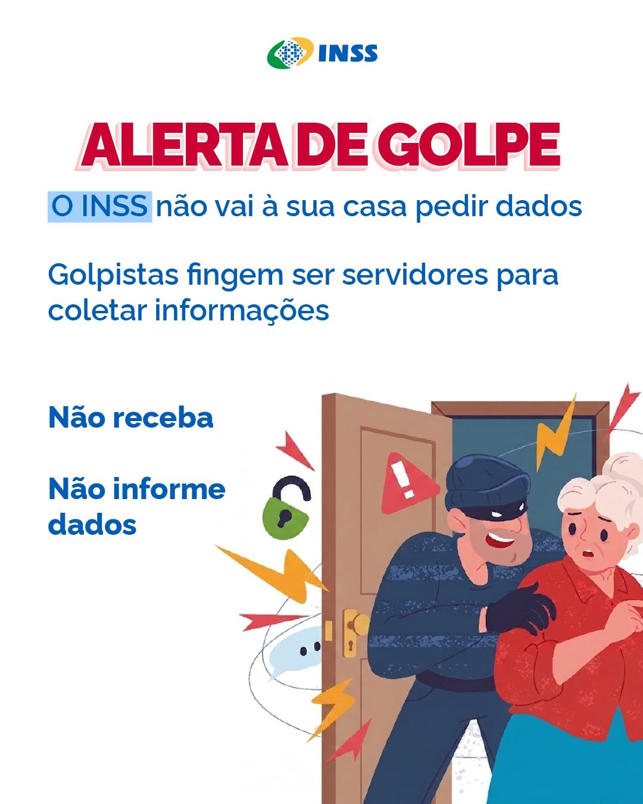
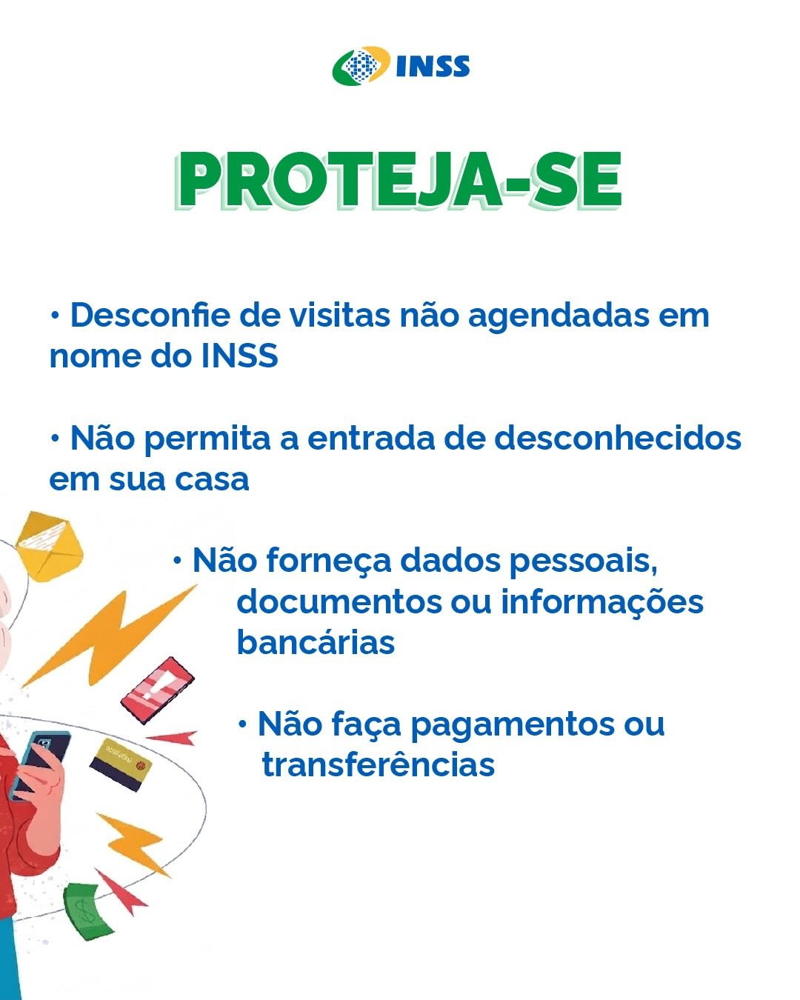
⬅ ➡ Role para o lado para ver os 3 cartazes
👍❤️ 316 comentários · 22 compartilhamentos
💬 Comentar↗ Compartilhar
CONTEÚDO EDUCATIVO⚠ O que devemos observar?
Alerta: o INSS não vai à sua casa pedir dados.
Proteja-se: desconfie de visitas, não entregue dados e não pague nada.
Suspeitou? É golpe: procure a polícia e confie só nos canais oficiais.
🏛️ Antes de acreditar ou compartilhar: consulte sempre os canais oficiais.
Compartilhei com minha mãe. Ela mora sozinha.
Alguém já recebeu essa visita aqui no bairro?